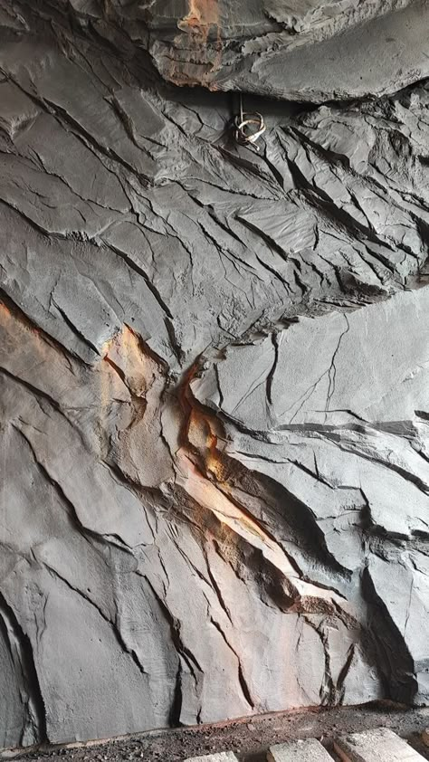
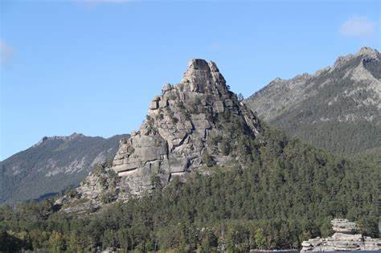
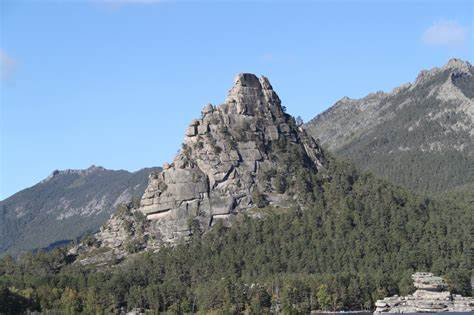

Оқжетпес жартасы – Бурабайдың символы және дала аңызы
Оқжетпес – Бурабай көлінің жағасында орналасқан ерекше жартас. Аты «оқ жетпейді» деген мағынада, бұл атау еркіндікті тұтқыннан артық көрген батыр қыз туралы аңызбен байланысты.
- Биіктігі: шамамен 300 метр
- Орналасуы: Бурабай көлінің жағасында
- Құрамы: уақытпен мүжілген гранит
Не көруге болады?
- ⛰ Жартас пішіні – алып жауынгер немесе ұйықтап жатқан алыпқа ұқсайды
- 📸 Байқау алаңдары – Бурабай мен ормандарға көрініс
- 🗿 Аңызға айналған пішіндер – түрлі бейнелер көрінеді
Не істеуге болады?
- 🚶♂️ Серуендеу және фотоға түсіру
- 🧗♂️ Тауға өрмелеу
- 🛶 Қайықпен серуендеу
Қалай жетуге болады?
📍 Бурабай ұлттық паркі
🚗 Көлікпен: Астанадан 3 сағат
🚶 Жаяу: Бурабай орталығынан 15–20 минут
Жұмыс уақыты мен бағалар:
🕒 Кіру: жыл бойы ашық
💰 Кіру ақысы: тегін
Оқжетпес – бұл табиғаттың ғажайыбы және Бурабайдағы міндетті көретін орындардың бірі! ⛰✨
ФОТО

 
